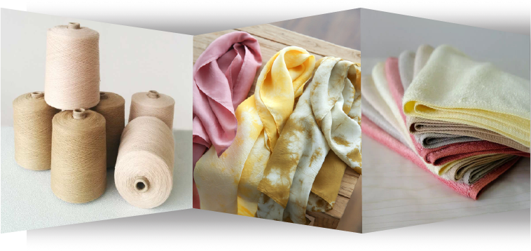
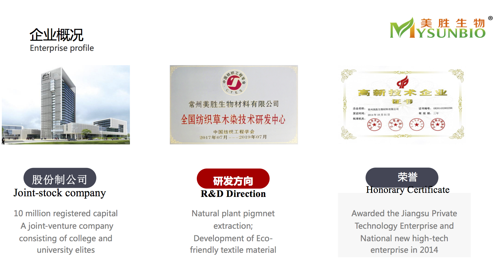
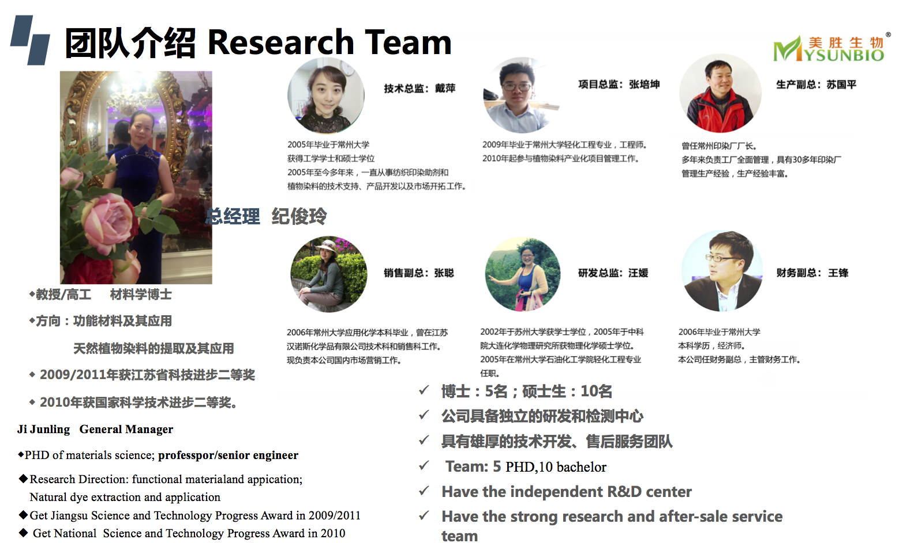
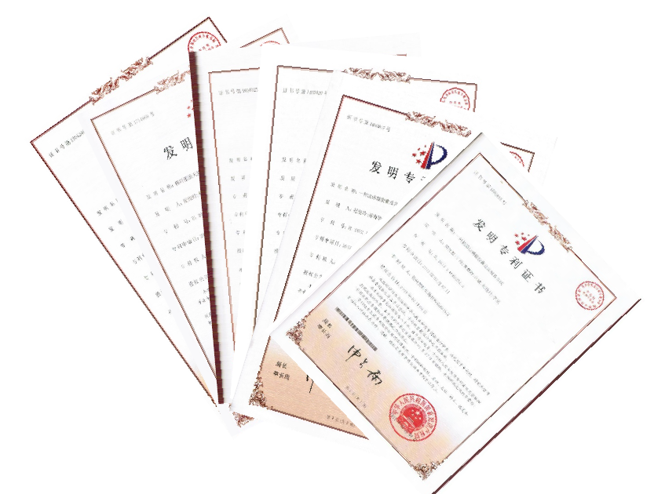

- 会社概要（英語版）
Changzhou Meisheng Biomaterials Co., Ltd., was founded in 2010.
It is a national new high-tech enterprise, the first supplier of plant dye powder and first national Plan dye R&D center in China We specialize in research, development and sale of natural dye and environment-friendly textiles.
It is a national new high-tech enterprise, the first supplier of plant dye powder and first national Plan dye R&D center in China We specialize in research, development and sale of natural dye and environment-friendly textiles.


- Mysunbioが所有している特許（MYSUNBIO Patent）
We have 23 patents application which includes 14 authorized patents.
And it includes plant dye related 12 patents application and 10 authorized patents

- Plant Dye and its dyeing method
- The Extraction, Seperation and application of plant dye
- The plant dyeing method on cotton fiber
- A preparation and application of the brown pigment
- A Preparation of the plant dye printing ink
- A Preparation of the eco-friendly printing ink
- A dyeing method and appication of the persimmon extraction
- A preparation method and application of red sandalwood
- A wound dressing with Taditional Chinese Medicine
- A extraction method of Azadirachtin
- A preparation and application of blue grass
- A paste plant hair dye
- Mysunbio詳細紹介するスライド
より詳細を知りたい方は、Mysunbioの紹介スライド（英語版）はこちらになります
Mysunbioの紹介スライド（英語版）をダウンロード
Mysunbioの紹介スライド（英語版）をダウンロード